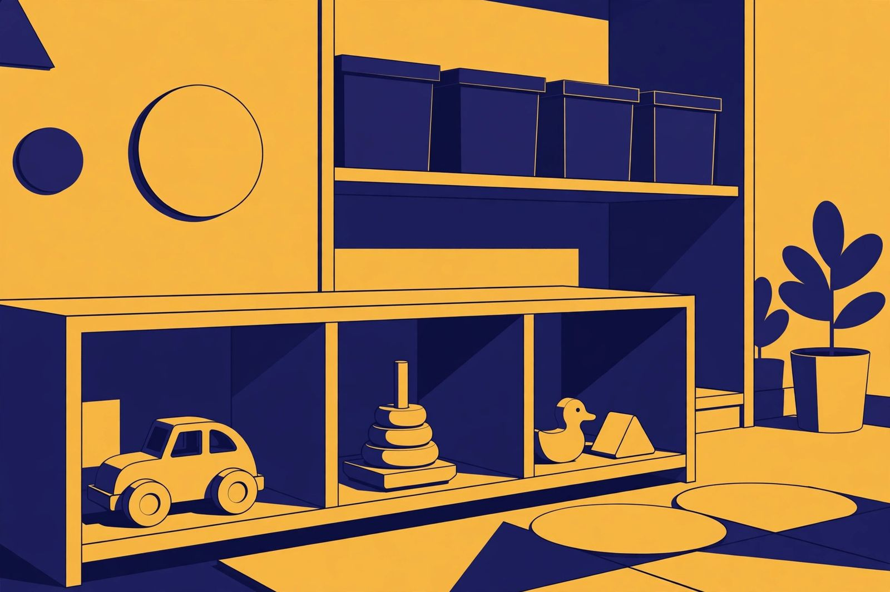

Toy rotation shelving: a low display shelf, closed bins, and a swap that takes minutes

Toy rotation works when it is built as shelving, not as a tidying mood. The layout has two zones. Zone one is a low, open shelf holding one small set of toys where a child can see every choice and put things back. Zone two is closed, labelled bins holding the rest, out of sight and out of reach. Rotation guides put the starting set at about 6 to 10 toys out for a two year old, with the remainder split across 3 or 4 closed bins, swapped one bin at a time every 1 to 2 weeks (s3). Build those two zones properly once, and each swap is a five minute shelf job instead of a full room sort.
The job, in one page
Difficulty is low. The work is assembling or placing one low unit, anchoring it, sorting toys once by type of play, and filling bins. Allow one afternoon for the first sort and setup, and minutes per swap after that. The dated cost anchor for this layout is the IKEA TROFAST storage combination with boxes at C$135, checked at IKEA Canada on November 20, 2026 (s1). The hire a pro line is narrow: anchoring into masonry, lath and plaster, or any wall you cannot identify is a handyperson job, because the fixing has to match the wall. Everything else here is measuring, sorting, and labelling.
What the evidence actually supports
The research behind rotation is one well run study, and it is worth knowing its size. Researchers at the University of Toledo observed 36 toddlers in supervised free play under two conditions, one with four toys in the room and one with sixteen. With fewer toys, the children had fewer separate bouts of play, longer durations of play, and played with each toy in a greater variety of ways (s2). The authors read that as better focus: longer periods with a single toy, and more room to explore it creatively (s2).
Two honest limits follow. The study tested toddlers, aged 18 to 30 months in the wider reporting, in a lab playroom, not school age children in a family room. And it tested the number of toys present, not a brand of shelving. What it supports is the small display set. The bin counts and swap intervals in the guides, 6 to 10 toys out, 3 or 4 bins, a swap every 1 to 2 weeks (s3), are editorial starting points that fit on one low shelf. Treat them as a first setting to adjust, not as a developmental target.
Choosing the display shelf: two verified units compared
| Unit | Verified figure | Checked price | Best for |
|---|---|---|---|
| IKEA TROFAST storage combination with boxes (s1) | 93 by 44 by 52 cm; grooved frame lets boxes and shelves be placed where wanted and changed at any time; low storage designed so children can reach and organize their things | C$135, IKEA Canada, checked November 20, 2026 | The display and bin system in one frame: the current set sits in open boxes, spare boxes wait in the same footprint |
| IKEA KALLAX shelving unit, 77 by 77 cm (s6) | 76.5 by 39 by 76.5 cm; maximum 13 kg per shelf; maximum 25 kg on the top | Not checked in this run | Families who already own one: open cubes display the current set, fabric bins in the remaining cubes hide the next set |
The decision framework is three questions. First, height: can the child reach every display position without climbing? The TROFAST combination stands 52 cm high (s1), inside a toddler reach zone by design. Second, containment: does the unit take lidded bins for zone two, or only open display? A rotation with nowhere closed to store the waiting sets collapses into a bigger toy box. Third, change: can the layout move as the child grows? Grooved frames and cube grids both reconfigure; a fixed, single purpose toy box does not.
Tools and materials
- The low display unit, with its supplied wall anchoring kit.
- Three or four lidded, opaque bins that fit the storage shelf or closet shelf they will live on. Opaque matters: a child who can see stored toys treats them as available (s4).
- Zip bags or mesh bags for small sets, so puzzles, figures, and building pieces travel inside the bin as complete sets (s4).
- Labels or numbers for the bins, so the next bin in sequence is known without opening them (s4).
- A tape measure, a level, a pencil, a stud finder or wall scanner, and a drill and driver for the anchoring step.
- A laundry basket for the first sort.
Set up the rotation in numbered steps
- Place and anchor the display unit first. Position it where it will live, then anchor it to the wall before a single toy goes on it, following the safety section below.
- Gather one room only. Put every toy from the main play area into the laundry basket. Set aside anything broken, incomplete, or outgrown; rotation cannot fix a collection problem.
- Sort by type of play. Make piles for build, pretend, move, create, puzzle, and book (s3). Sorting by play type, rather than by brand or colour, is what makes each rotation feel balanced.
- Pick the always out set. Choose 2 to 4 daily favourites that never rotate, such as a comfort toy (s4). Never rotate out a comfort item, or a toy the child is deep into right now (s3).
- Fill the display shelf. Lay out one balanced set, about 6 to 10 toys for a two year old as a starting point, one or two from each pile (s3). One spot per toy, with space around each, on the low open shelf where every choice is visible (s4).
- Fill the rotation bins. Divide the rest across 3 or 4 bins, each bin carrying a mix of play types so it can stand in for the shelf without leaving a gap (s3, s4). Bag small sets inside the bin so they come back complete (s4). Number the bins in swap order.
- Store the bins out of sight. A high closet shelf, a closed closet, or another spot the child cannot reach or climb to (s4). Keep each bin light enough to lift down safely with two hands.
- Swap on the trigger, not the calendar alone. Swap one bin every 1 to 2 weeks, or sooner when play drops off (s3). Do the swap after bedtime so the shelf looks new in the morning (s3), and check every returning toy for loose or small parts before it goes on the shelf (s3).
What success looks like: the child can see every toy on offer from standing height, reach each one without climbing, and put each one back in its own spot; the waiting bins are closed, labelled, and out of sight; and a swap takes one bin down, one bin up, and under ten minutes.
Safety: anchoring, reach, and bin weight
Anchoring is part of the install, not an optional extra. IKEA anchoring guidance is plain that anchoring furniture to the wall helps prevent tip over accidents, and that children are especially at risk (s5). Work it in this order:
- Assemble the unit where it will stand and remove anything already stored in it.
- Scan the wall for wires and pipes before drilling, and locate the studs; try to anchor at least one side of the furniture into a stud (s5).
- Use the anchoring kit supplied with the unit. IKEA chests and wardrobes ship with one, and a lost kit can be ordered free or picked up in store (s5). Bookcases and cube units in a child room get the same treatment whether or not the box insists.
- Tighten the restraint with no slack, then push and pull the top of the unit. It should not rock away from the wall.
Reach is the second check. Display positions belong below the child shoulder height, so nothing on the shelf rewards climbing. Storage bins belong above adult waist height or behind a closed door, and each bin stays light enough for an adult to lift down with two hands without leaning into the closet. A bin that needs a chair to reach is a bin that gets left, and the rotation quietly stops.
The mistakes that end a rotation in week three
Rotating everything, including the comfort toy, is the fastest way to end the system; the always out set exists for a reason (s3, s4). Storing the waiting bins in clear boxes on a low shelf is the second: visible toys are available toys, whatever the schedule says (s4). The third is sorting by room tidiness instead of play type, which produces a shelf of five vehicles and nothing to build, pretend, or solve. The fourth is a bin with loose small pieces at the bottom. Bag the sets, or the returning bin arrives incomplete and the puzzle on the shelf cannot be finished (s4).
General information only. Follow each unit manufacturer anchoring instructions and load limits; the study cited tested toddlers in a lab setting, and guide counts are starting points to adjust. Figures and the price cited were checked November 20, 2026 and prices can change.
, Tom Reilly, Home & DIY Writer